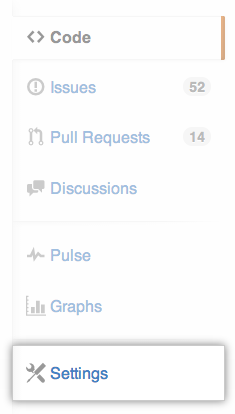

Any GitHub repository can be transferred between users or organizations. Transferring a repository gives the new user immediate administrative access to the repository—including its code, issues, pull requests, and releases. The repository's new owner will receive an email before the transfer is complete, giving that user the option to accept or reject the transfer within a day. If the new user doesn't reply to this email, the transfer won't complete.
Warning: Forking a repository is NOT the same as transferring it. Forking just creates a copy of the original repository.
What's transferred with a repository?
When you transfer a repository, its issues, wiki, stars, and watchers are also transferred. In addition:
- If the transferred repository is a fork, then it remains associated with the upstream repository.
- If the transferred repository contains a GitHub Pages site, then links to the Git repository on the Web and through Git activity are redirected. However, we don't redirect GitHub Pages associated with the repository.
- If the transferred repository contains webhooks, services, or deploy keys, they will remain associated after the transfer is complete.
- If the transferred repository has any forks, then those forks are associated with the new repository after the transfer is complete. Keep in mind that users who have forked your repository will need to update their remote URLs to point to the new Git repository in order to continue opening pull requests.
- All Git information about commits, including contributions, are preserved, unless Git history has been rewritten using
git rebase.
How are issue assignees handled?
If you transfer a repository from a user account to an organization, issues assigned to members in the organization remain intact. All other issue assignees are cleared. Only owners in the organization are allowed to create new issue assignments.
If you transfer a repository from an organization to a user account, only issues assigned to the repository's owner are kept. All other issue assignees are removed.
When a repository is transferred between two user accounts, issue assignments are left intact.
Transferring between user accounts
Before you transfer a repository, keep these things in mind:
- The target account must not have a repository with the same name, or a fork in the same network.
- If the repository is private, the target account must have a paid account with at least one unused private repository available.
- Private forks can't be transferred.
To transfer a repository to another user account:
- Open the repository's page on GitHub.
- Click Settings from the repository action bar. 
- Click Transfer.
- Read the warnings and heed them well. Enter the repository name to confirm that you've done this.
- Type the name of the new owner and click I understand, transfer this repo.
Transferring between organizations
Only users with admin or owner access to an organization's repository can transfer the repository out of the organization. On the other end, the person transferring the repository also needs to have admin rights in the receiving organization. Once a repository is transferred to an organization, the Owners team is the only group with read/write access to the repository, but they can choose to add other teams for further access. See "Permission Levels in Organizations" for more information.
You can arrange this by asking the receiving organization to create a team with admin privileges with no repositories in it.
Transferring from an organization to a user
Users must have admin or owner access to a repository before they can transfer it out of the organization. If the user does not have this access, a temporary admin team can be created with only the user and repository in it. The user receiving the repository is the only one who can perform the transfer.
Transferring from a user to an organization
Users must have admin or owner rights within the receiving organization before they can transfer a repository that they individually own. If the user does not already have this level of access, a temporary admin team can be created with only the user. The user sending the repository is the only one who can perform the transfer.
Just as when transferring a repository between two organizations, when a repository is transferred from a user to an organization, the Owners team is the only group with read/write access to the repository, but they can choose to add other teams for further access. See "Permission Levels in Organizations" for more information.
Redirects and Git remotes
When a repository is transferred, all links to the previous location are automatically redirected to the new location.
In addition to redirecting web traffic, all git clone, git fetch, or git push operations targeting the previous location will continue to function as if made on the new location. However, this can be somewhat confusing, so we strongly recommend updating any existing local clones to point to the new repository URL. You can do this by using git remote on the command line:
git remote set-url origin new_url
For more information, see "Changing a Remote's URL".
Warning: If you create a new repository under your account with the same name as the transferred repository, existing redirects to the transferred repository will break. Instead, use a different name for the new repository.